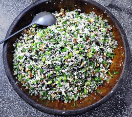
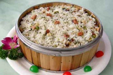
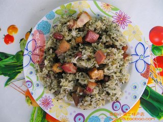
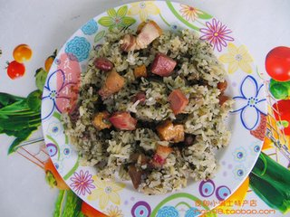
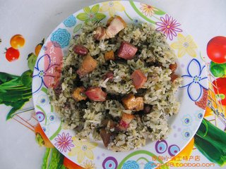

 


吃社饭作为恩施社节的一个重要组成部分，已深深的印入到了恩施人民的生活中，如今在恩施市的大多数地区，过社，吃社饭已成为了一种独具特色的风俗。 恩施市吃社饭的习俗由来已久，据清道光版《施南府志.风俗》中记载：“初春祭社祈年，合村酸饮。”由此看出，在清朝时期，恩施就已经有了吃社饭的习俗，且在当时十分盛行。
恩施社饭做法：
1.腊肉切粒，爆炒，因为是腊肉，所以在炒的时候不用放盐。
2.加入社菜翻炒，透油即可。
3.糯米，粘米洗好，备用。（两种米的比例是1:1）
4.胡葱切小段，放入洗好的米里。
5.所有材料一起搅拌均匀，放入高压锅内，加入适量的水即可。（如果是用材火烧饭的话，先把水烧开，加入粘米待水再次烧开后加糯米，水炸干后。放入所有材料搅拌均匀，小火焖10分钟即可。）